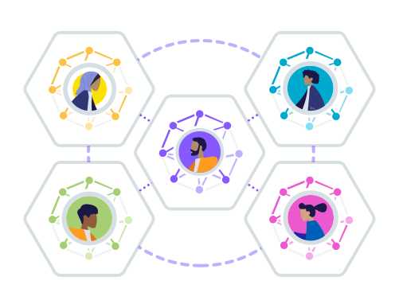
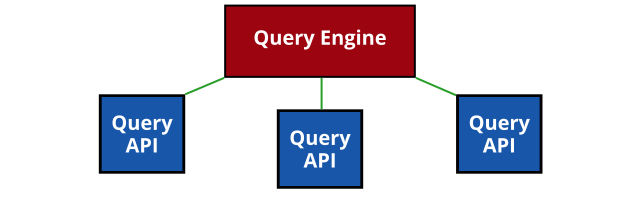
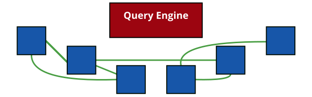
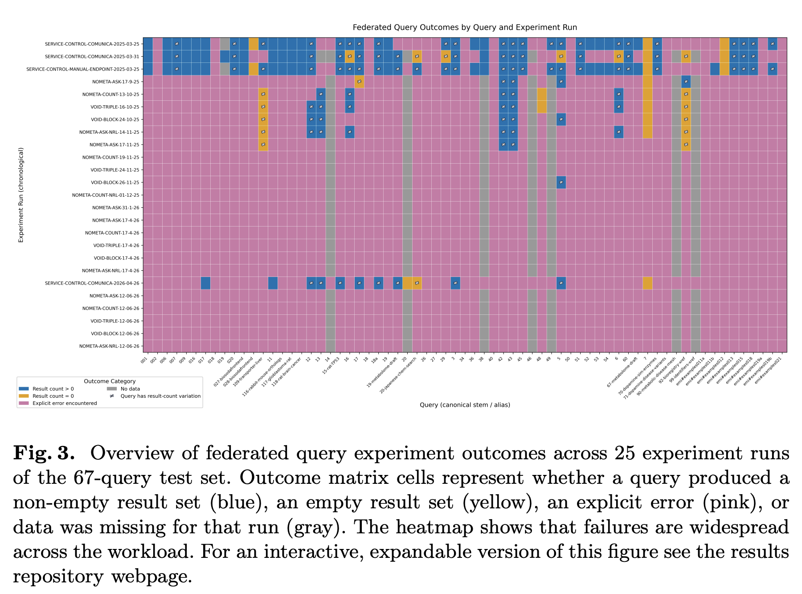
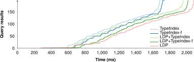
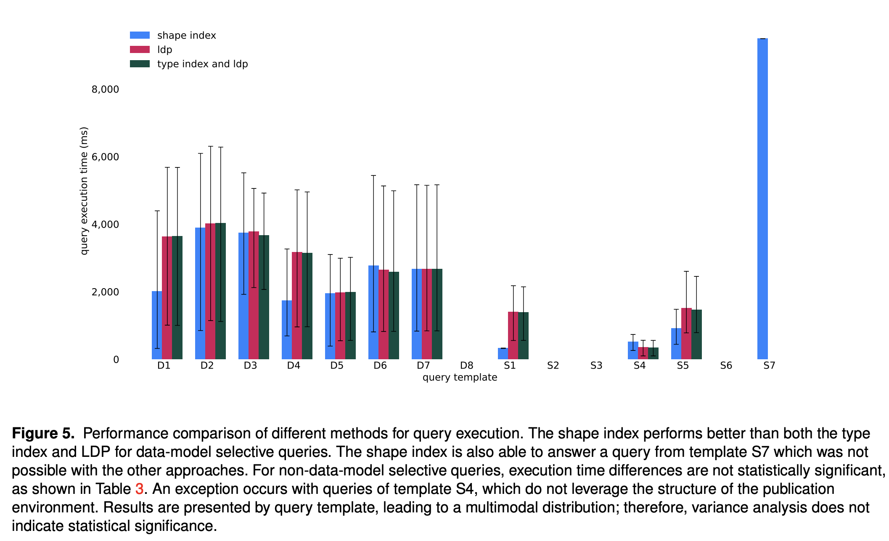
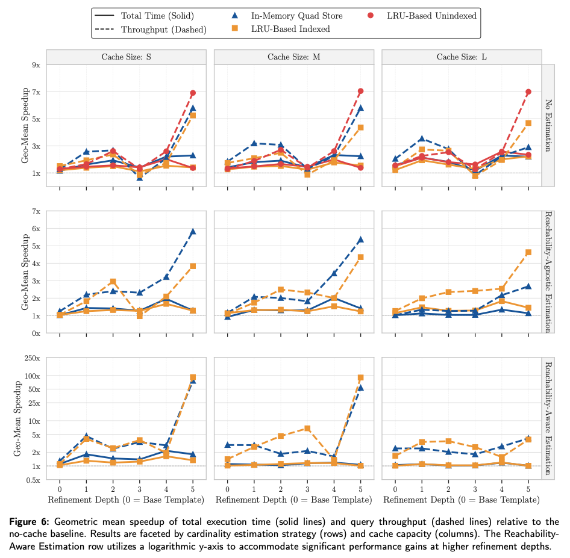

Data is highly decentralized
- Produced by governments, companies, individuals, …
- Stored at different locations across the world
- Consumed through interactive applications, processes, intelligent agents, …
Centralization not always possible

-
Private data
Technical and legal reasons
-
Evolving data
Requires continuous re-indexing
-
Web scale data
Indexing the whole Web is difficult
How to gain insights over decentralized data without prior centralization?
-
Not just one datasets
Data is spread over the Web into multiple data sources (public/private)
-
Not all data is not collocated with user device
User device may host some, but not all data
Let's integrate client-side, instead of trusting arbitrary intermediaries.
Decentralized data integration is challenging for application developers
-
Discovering data
How can I find data sources? How can I find data within a source?
-
Combining data
How to combine data across different data sources?
-
Ensuring sovereignty
How to preserve rights and policies of users?
Query engines abstract access to decentralized data
Hide the complexities of integrating decentralized data
Apps & AI agents
Query engine
Decentralized data
Image credit
Focus on Knowledge Graphs
Approaches for querying over decentralized data
-
Federated Query Processing
Distributing query execution across known sources
-
Link Traversal Query Processing
Local query execution over sources that are discovered by following links
Federated querying: Distribute query over query APIs

-
Clients do limited effort
Split up the query, distribute it (source assignment), and combine results
-
Servers perform most of the effort
They actually execute the queries, over potentially huge datasets
Link Traversal: Exploit interlinking of documents

-
Linked Data documents are linked to each other
Following the Linked Data principles
-
Query engine can follow links
Start from one document, and discover new documents on the fly
Is the SPARQL protocol the right way forward?
-
Public SPARQL endpoints have low availability (95%)
~1.5 days downtime per month!
Due to high query expressivity is high and public nature
-
Alternative interfaces besides SPARQL endpoints
Linked Data Fragments: TPF, WiseKG, brTPF, Passage, ...
Different levels of server expressivity
-
Trade-off between server and client effort
Low-cost publishing prevents server availability issues
Executing parts of queries client-side
Federated querying over public endpoints in practise does not work due to restrictions

Is Link Traversal the right way forward?
Link Traversal is too slow for querying over Linked Open Data!
-
Massive number of possible links on the open Web
New content is produced faster than you can follow links
-
Inefficient query plans
Traversal engine can not optimize sufficiently due to lack of statistics
Link Traversal becomes feasible with structural assumptions
-
Environments with structural properties
Subsets of the Web that follow specific structures
-
Traversal engines can make additional assumptions
Assumptions about how data is structured and interlinked
→ Guided link traversal (Taelman 2023)
Solid pods follow structural properties
-
Pod contents listed through as REST API
Linked Data Platform
-
WebID profile
User name and link to storage
-
Type index
Type-based resource discovery
Query results arrive incrementally
within human attention limits

If pods expose more information, complex querying can become faster
-
When following links, engines can discover optimizations
If pods expose them
-
A pod can guide engines more efficiently towards relevant data
Type indexes, shape trees, shape indexes, …
-
Cross-pod indexes can prune out irrelevant pods
Aggregations or summarization of data across collections of pods
Dangers: staleness, trust, censorship, …
Pods exposing shape information allows query engines to skip many links

Can personalized nature of engine be exploited for improved performance?
Client-side caching across queries

How to manage different schemas across sources?
Schema alignment at query time!
How to manage partial trust in data
Malicious friends stating different names of others
-
Not all data (sources) may be trustworthy
How to (partially) trust a data source?
-
SWSL: Subweb specification language
Specify which subsets of sources to trust
<https://uma.ex/#me> ex:hasSpecification <#spec1>.
<#spec1> ex:appliesTo <https://uma.ex/>;
ex:scope """
FOLLOW ?friend WITH SUBWEBS {
<https://uma.ex/#me> foaf:knows ?friend.
} INCLUDE { ?friend ?p ?o. }
"""^^ex:SWSL.
Bogaerts, B., Ketsman, B., Zeboudj, Y., Aamer, H., Taelman, R., & Verborgh, R. (2024). Distributed subweb specifications for traversing the web. Theory and Practice of Logic Programming, 24(2), 394-420.
Conclusion: Personal query engines for integrating decentralized data
-
Client-centric
Execution happens close to the user, in a trusted environment
-
Various query processing techniques exists
Trade-offs between federated querying and link traversal
Need for a hybrid between federation and link traversal?
-
Active research
https://comunica.dev/: Engine for federation + link traversal
We're looking for collaborations!
Personal Retrieval and Integration team KNoWS / IDLab / UGent
-
Ruben Eschauzier
Personalized query optimization in link traversal query processing
-
Elias Crum
Storing and querying personal genome data in decentralized environments (Joint PhD with VITO)
-
Jonni Hanski
Adaptive client-side techniques in link traversal
-
Bryan-Elliott Tam
Optimizing decentralized querying using explicit data publication structures
-
Jitse De Smet
A data management approach to RDF data integration
-
Ruben Taelman (team lead)